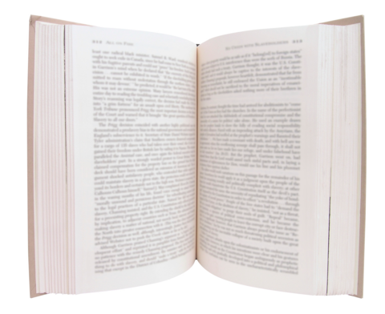
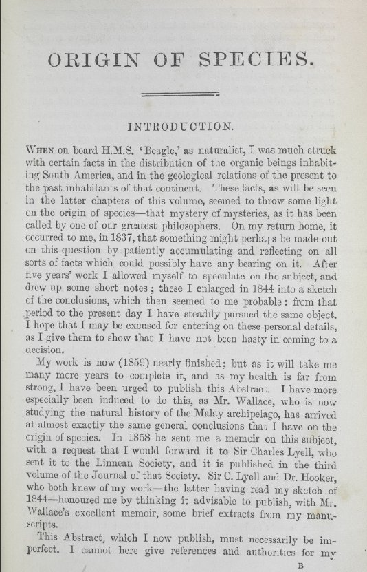

Fully Justified Text

Java for Everyone Screencast


main
MARGIN = 40
line = ""
done = false
while not done
word = next word in input
if (word is "Q")
print line
done = true
else
if word fits on line
append word to line
else
print format(line, MARGIN)
line = word
format(line, margin)
spaces to add = margin - length of line
gaps = #words in line - 1;
spaces per gap = spaces to add / gaps
extra spaces = spaces to add % gaps
result = ""
for each word in the line
add the word and the space after it to result
add spaces to result
if extra spaces > 0
add another space to result
extra spaces--
return result
nextWord(line, start) i = start while i < line length and char at i is not a space i++ while i < line length and char at i is a space i++ return i
countWords(line) count = 0 next = 0 while next < line.length() next = nextWord(line, next) count++ return count